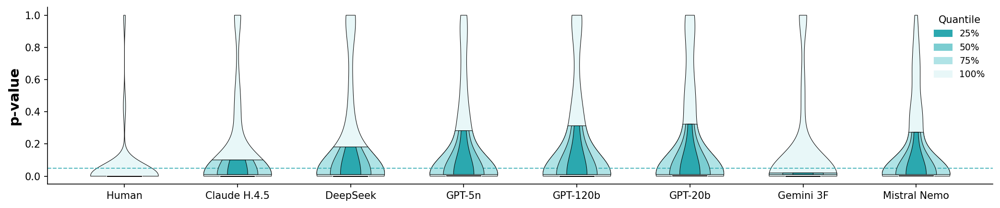
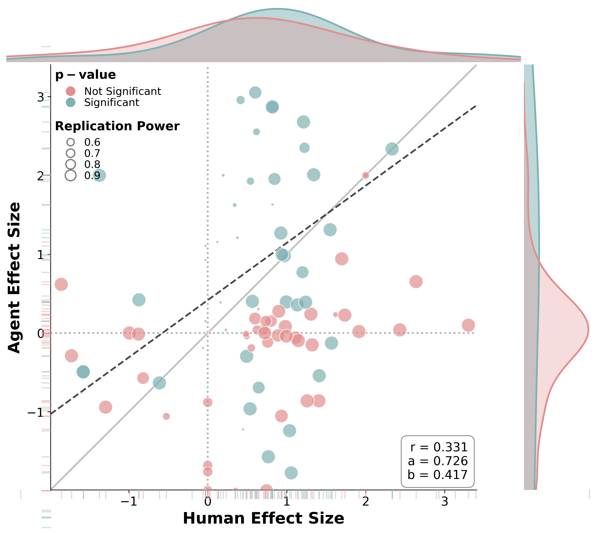
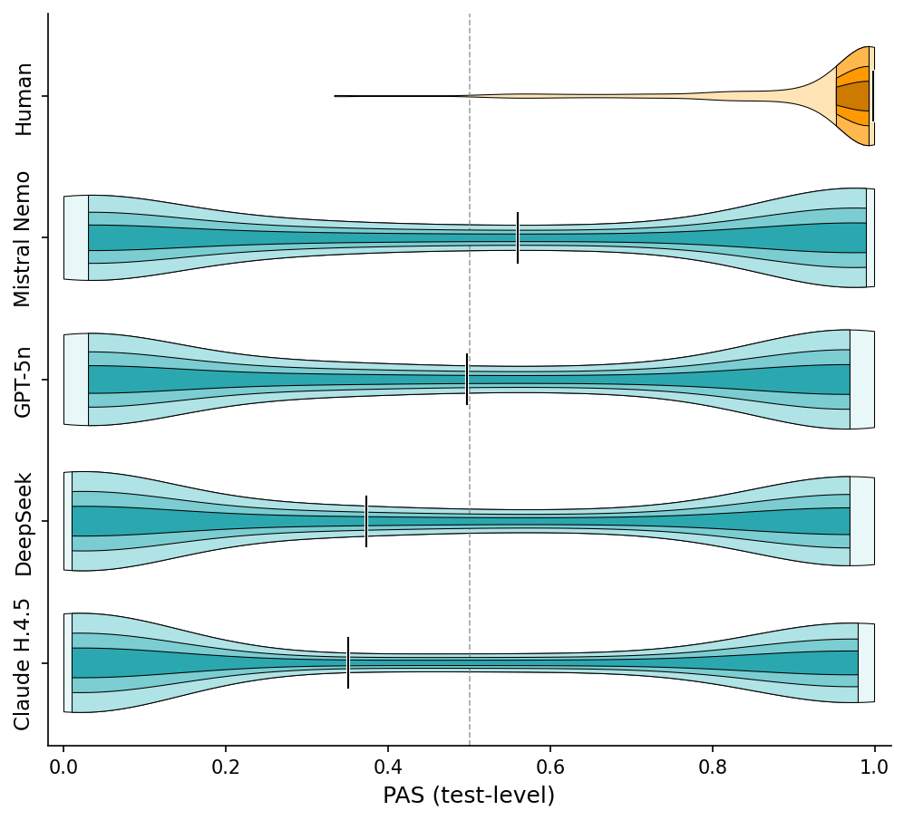
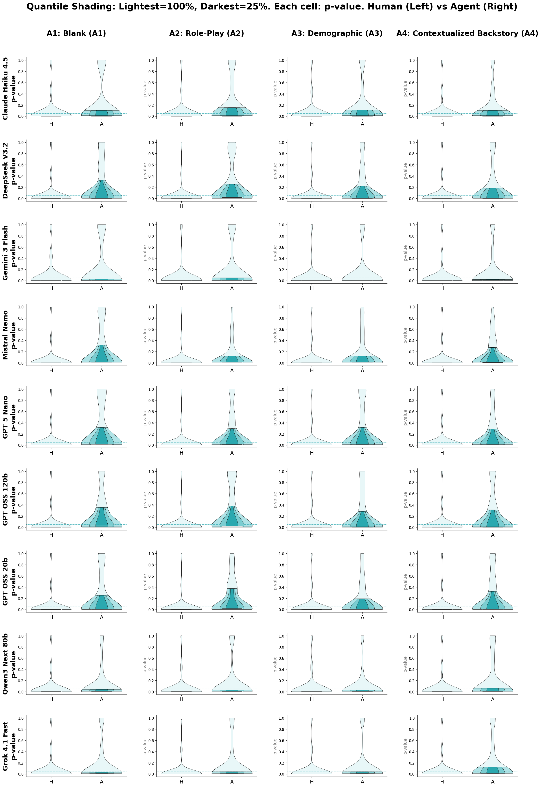
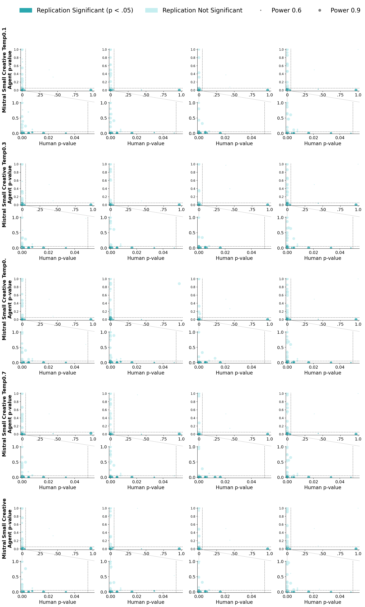

HumanStudy-Bench: Towards AI Agent Design for Participant Simulation
A standardized testbed converting human study papers into reusable simulation environments for evaluating AI agent alignment at the level of scientific inference.
Xuan Liu1 Haoyang Shang2 Zizhang Liu3 Xinyan Liu2 Yunze Xiao4 Yiwen Tu1 Haojian Jin1 1UC San Diego 2BreathingCORE 3Tsinghua University 4Carnegie Mellon University
About Me
Xuan Liu (刘萱)
First-year Ph.D. Student, UC San Diego
Research interests
Exploring human-like intelligence in AI models (LLMs/VLMs)Building AI tools to accelerate social science research and human behavior understandingSocietal aspects of AI, including privacy protection, security, and sustainable innovation
A toolkit that uses classic social science experiments as calibration tasks to continuously measure and adjust agent behavior until on target.
ReproducibleControllable
CoBRA: Programming Cognitive Bias in Social Agents Using Classic Social Science Experiments. ACM CHI 2026 🏆 Best Paper Award
cobra.clawder.ai
↓ Brief intro at the end
EvaluateToday's focus
HumanStudy-Bench
Reconstructs human studies as a standardized testbed to evaluate whether AI agents replicate human results.
BenchmarkTurn Papers into Testbeds
HumanStudy-Bench: Towards AI Agent Design for Participant Simulation. arXiv 2026
hs-bench.clawder.ai
LLMs as Simulated Participants
LLMs/VLMs are increasingly used as surrogates for human participants in social science experiments.
Human-like decision-making across economics, political science, marketing, and social psychology.
Issues
Unstable responsesSensitive to prompt & samplingConflate model vs. agent setup
▼
We frame participant simulation as an agent design problem — evaluate at the level of scientific inference.
Participant Simulation as an Agent Design Problem
Agent = Base Model + Agent Specification
Specifications encode behavioral hypotheses — they are not neutral wrappers, and can qualitatively change outcomes even when the base model is fixed.
Agent Specification includes:
Role & task framingDemographicsPrior knowledge & goalsAuxiliary mechanisms
What is HumanStudy-Bench?
A platform that converts published human studies into standardized testbeds for AI agents, evaluating alignment with human participants at the level of scientific inference.
12
Foundational Studies
Major behavioral phenomena
6,000+
Experimental Trials
Replayed with AI agents
10–2,100+
Human Sample Range
Per study participant count
2
Alignment Metrics
PAS & ECS
StandardizedExtensibleAutomated Pipeline
Open Collaboration: We welcome contributions of new studies. Join us to grow the community!
Key Features of HumanStudy-Bench
1
Agent Design Optimization
For each base model, searches for the best agent design — revealing best-case performance and gaps to human behavior.
2
High-Fidelity Reconstruction
Reconstructs full experiments from original papers — trial sequences, instructions, and analysis pipelines in a shared runtime.
3
Inferential-Level Metrics
Compares at the level of scientific inference — applying the same analysis pipeline to both humans and agents with PAS & ECS.
4
Standardized & Extensible
Standardized pipeline can be reused to add new studies — a continually extensible platform for AI-participant experimentation.
Filter–Extract–Execute–Evaluate Pipeline
From published human studies to reusable simulation environment in four stages.
1
Filter
Selects studies with complete details, quantifiable outcomes, and simulation feasibility.
2
Extract
Converts papers into machine-executable specs: profiles, designs, tests, and ground-truth.
3
Execute
Runs agents through reconstructed protocols with trial-level stimuli and conditions.
4
Evaluate
Runs the same statistical tests on agent data and computes PAS & ECS alignment scores.
Evaluation Metrics
Two complementary metrics for measuring human–agent alignment.
PAS — Probability Alignment Score
Phenomenon level — do agents reach the same scientific conclusion as humans?
ECS — Effect Consistency Score
Data level — do agents reproduce the same behavioral pattern and effect magnitude?
Probability Alignment Score (PAS)
Do agents reach the same scientific conclusions as humans?
Sj = πhπa + (1 − πh)(1 − πa)
P(Both H₁) + P(Both H₀)
Convert test statistics → likelihood ratios → bounded posteriors via sigmoid
Do agents reproduce the magnitude and pattern of human behavioral effects?
ECS = ρ · Cb
Lin's Concordance Correlation on standardized effect sizes
ρ — Precision
Captures the relative pattern of effects across conditions
Cb — Accuracy
Penalizes deviations in magnitude and location
ECS ≈ 1.0 requires both correct pattern (ρ) and correct magnitude (Cb).
12 Foundational Studies — 3 Domains
Individual Cognition
Anchoring Effect (Jacowitz & Kahneman, 1995)
Framing Effect (Tversky & Kahneman, 1981)
Representativeness (Kahneman & Tversky, 1972)
False Consensus (Ross et al., 1977)
Strategic Interaction
Beauty Contest (Nagel, 1995)
Prisoner's Dilemma (Shafir & Tversky, 1992)
Dictator Game (Forsythe et al., 1994)
Trust Game (Berg et al., 1995)
Social Psychology
Side-Effect Effect (Knobe, 2003)
Impression Formation (Asch, 1946)
Minimal Group (Billig & Tajfel, 1973)
Drinking Norms (Prentice & Miller, 1993)
Complete materialsSpecified statistical testsReplication evidenceTens to 2,100+ participants
Agent Design Variants
Four levels of specification complexity, tested across 10 LLMs.
A1
Blank
Base model with no additional specification. Raw capability baseline.
A2
Role-Play
"Act as a human participant in a psychological study" — no specific attributes.
A3
Demographic
Age, gender, occupation sampled from the original study's participant distribution.
A4
Backstory
Demographics + rich narrative about life history, personality, and daily context.
10 Models Evaluated + Mixed-Model Baseline
Claude Haiku 4.5DeepSeek V3.2Gemini 3 FlashMistral NemoMistral Small CreativeGPT 5 NanoGPT OSS 120bGPT OSS 20bQwen 3 Next 80bGrok 4.1 Fast
Main Leaderboard (Best Agent Design per Model)
Model
Best Method
Cognition
Strategic
Social
PAS ↑
ECS ↑
Gemini 3 Flash
A3
0.49
0.41
0.60
0.497
0.130
GPT 5 Nano
A4
0.64
0.44
0.30
0.459
0.194
Mistral Nemo
A3
0.59
0.33
0.40
0.440
0.231
Qwen 3 Next 80b
A4
0.36
0.46
0.48
0.434
0.114
GPT OSS 20b
A1
0.59
0.28
0.39
0.419
0.178
Grok 4.1 Fast
A3
0.33
0.30
0.61
0.410
0.007
Mistral Small Cr.
A3
0.23
0.50
0.45
0.393
0.138
Claude Haiku 4.5
A4
0.32
0.34
0.51
0.389
0.122
DeepSeek V3.2
A4
0.36
0.34
0.43
0.374
0.125
GPT OSS 120b
A3
0.39
0.31
0.42
0.372
0.168
Mixed Models
v4
0.72
0.33
0.31
0.262
0.212
Overall replication performance remains unsatisfactory across all models. PAS ranges 0.26–0.50.
P-value Distributions: Human vs Agent
Human studies show a sharp peak at significance (p < 0.05); agent simulations are dispersed and inconsistent.

Even top models allow substantial probability mass to leak into the non-significant range (p > 0.05), reducing the replication rate.
Agent vs Human Effect Sizes

Low correlation
r = 0.331 — poor precision in replicating human effects.
Extreme agent variance
Agent effects are flatter and wider than human effects in both directions.
Significance mismatch
Human-significant effects often become non-significant for agents, and vice versa.
Test-Level Alignment: Bimodal vs Unimodal

Human: unimodal
Concentrated near high PAS — consistent replication.
LLM agents: polarized bimodal
Either fully aligned (~1.0) or fully misaligned (~0.0), lacking nuanced middle ground.
PAS vs ECS: A Trade-off
Models face a trade-off between replication validity and magnitude precision.
High PAS, low ECS
Gemini 3 Flash: PAS = 0.497, ECS = 0.130. Correct conclusions but exaggerated effects.
Low PAS, high ECS
Mistral Small: PAS = 0.259, ECS = 0.248. Right magnitudes but fails significance.
Bimodal vs unimodal
Humans are unimodal; agents are polarized bimodal — fully aligned or fully misaligned.
Ensemble failure
Mixed-model baseline: PAS = 0.26. Aggregating models causes destructive interference.
Agent Design: Non-Monotonic Effects
More context does not always help — and sometimes hurts.
Demographics help (A3 > A1)
Significant PAS improvement across 9/10 models (p = 0.002).
Backstory: mixed signal
A4 vs A3: no global difference, but degrades some models (Gemini, Mistral).
Role-play can backfire
"Act as a human" hurts Claude & Mistral — triggers rationality bias.
Also: scale ≠ better, temperature ≠ fix
Larger models don't outperform smaller ones. Temperature scaling has minimal effect.
P-value Distributions: Full Grid

Consistent dispersion
Agent p-values are more dispersed than human baselines across all models.
A3 & A4 closer to human
Demographic/backstory designs produce tighter distributions, but a gap remains.
Model-specific patterns
No single design universally dominates — reinforcing non-monotonic effects.
Temperature Scaling: Minimal Effect

Identical across temperatures
T = 0.1 to 1.0 — p-value patterns remain nearly indistinguishable.
Structural gap, not sampling noise
Misalignment is intrinsic to model representations, not output variance.
Implication
Focus on agent design, not inference-time hyperparameter tuning.
It's Not About Model Size
Many assume: bigger model = more human-like. Our data tells a different story.
Same model, different agent design 35%+ performance variation
Design > Scale
Agent design and calibration matter far more than raw parameter count for human replication fidelity.
Gemini 3 Flash
No background info → mediocre performance.
Add demographic attributes (age, occupation, etc.) → significant improvement. Same model, different design.
GPT OSS: 20B vs 120B
Under the same agent design, the larger 120B model actually performs worse than the smaller 20B. Bigger is not always better for simulating human behavior.
No Universal Agent Design Template
We tested 10 mainstream models — each has a different "optimal recipe."
Gemini 3 Flash
Best with
A3: Demographic Info
Adding age, gender, occupation → highest PAS among all configs
GPT 5 Nano
Best with
A4: Rich Backstory
Detailed life narrative + personality → most effective for this model
Mistral Creative
Highly sensitive to
A2: Role-Play
Role-play causes dramatic performance drop — extremely sensitive to persona framing
No universal best design — practitioners must match the design to the model.
"You Are a Human Participant" Can Backfire
Role-play instructions seem intuitive — but they can actually hurt performance.
GPT OSS: blank > role-play
No persona (A1) produces data closer to real humans than "act as a human" (A2).
Mistral: role-play hurts
Significant performance drop (p < 0.001) — the "human" framing misleads the model.
The model's "human" ≠ real human
Model's "human"
Rational · Stable · Self-consistent
≠
Real human
Hesitant · Emotional · Systematically biased
Mixing Models ≠ More Human-Like
Intuition says diversity helps — but model ensembles actually perform worst.
Mixed-Model Baseline PAS
0.262
Near-worst among all configurations (p < 0.001 vs single models)
Destructive interference
Distinct response distributions dilute the behavioral signal when mixed.
Implication
A single well-designed agent outperforms a diverse ensemble.
Summary & Takeaways
Framing: Agent Design Problem
Participant simulation should be treated as an agent design problem, not a raw model evaluation. Agent specifications encode behavioral hypotheses that qualitatively change outcomes.
Current State: Limited Alignment
LLM-based agents achieve limited and inconsistent inferential alignment with humans. They exhibit polarized, bimodal behaviors rather than human-like unimodal patterns. Neither larger models nor ensembles reliably improve alignment.
Design Matters More Than Scale
Demographic conditioning consistently helps, but richer context has non-monotonic effects. Agent design and calibration are more critical than raw parameter count for human replication.
"Act as a Human" Can Backfire
Role-playing as a human participant doesn't necessarily help — the model's idealized "human" is too rational, suppressing the very biases real humans exhibit.
HumanStudy-Bench — a reusable, standardized platform for rigorous evaluation of AI-based social simulations. Open source · Community-driven · Continuously extensible
How to Contribute a Study
Turn a published paper into a replayable simulation — no new experiments needed.
Natural language specs like "act biased" give inconsistent results across models. CoBRA is a closed-loop system that uses classic social science experiments as calibration tasks, setting quantitative targets (0–4 scale) and adjusting via prompts, activations, or fine-tuning until on target.